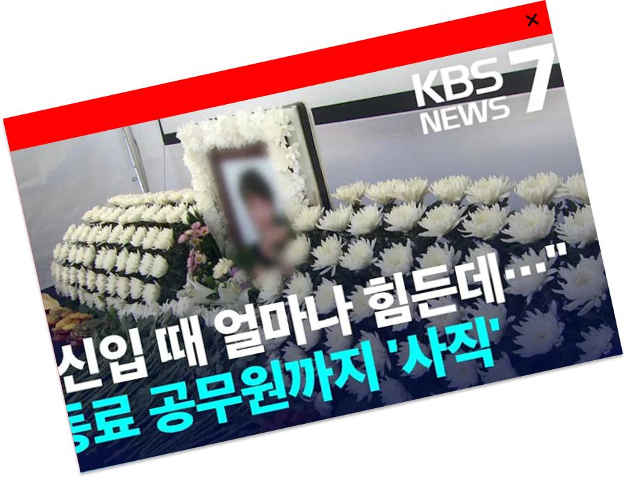
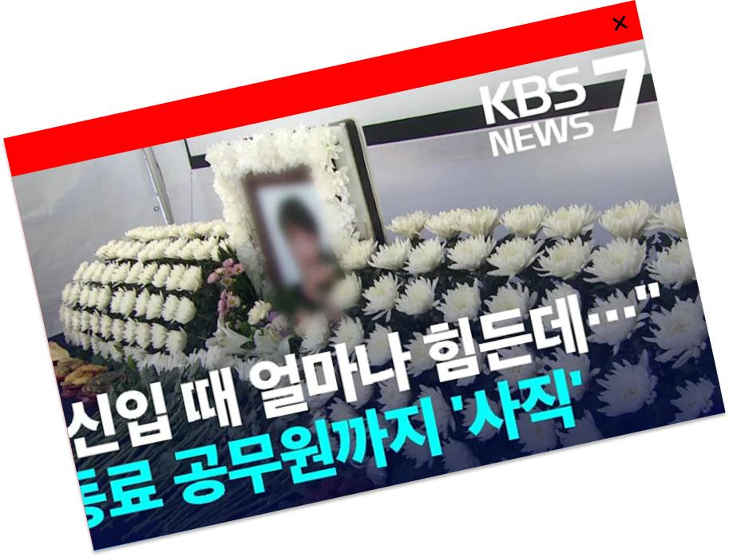
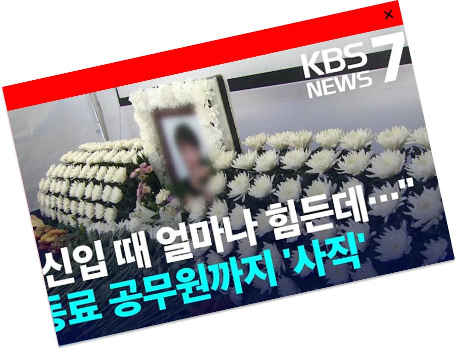
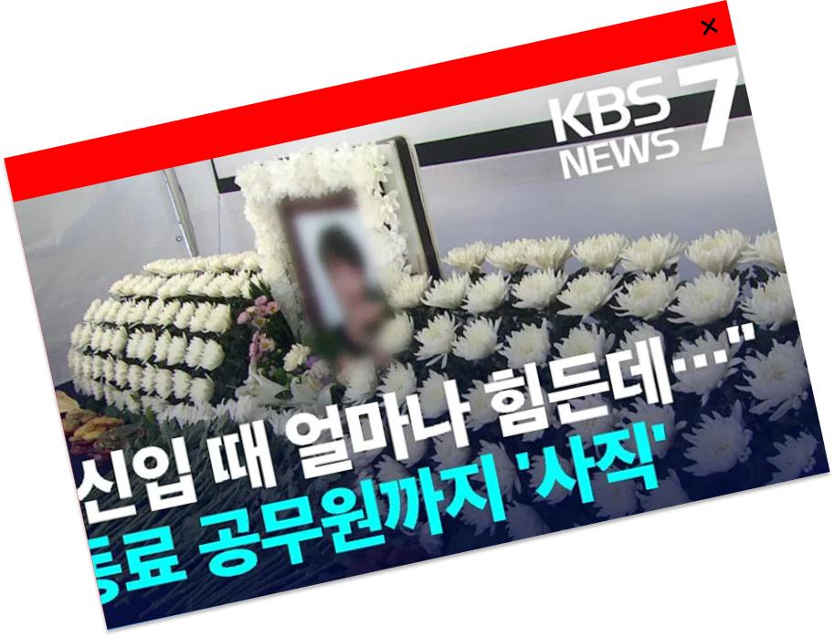

이 악성민원들은 그 형태는 다르지만 공무원의 신체와 정신에 심각한 악영향을 끼치고,
국가행정력도 저하시키며 나아가 정상적인 민원처리에도 지장을 초래함으로써 국민 전체에 피해를 준다.
여러 사례와 통계는 우리의 악성민원이 위험 수위에 이르렀음을 경고하고 있다.
“저 때문에 죽었다고 생각하기에는 좀 그렇죠. 미안하거나 뭐 그런 감정은 전혀 없어요.그 사람 순직이 인정되면 저는 고의로 그 사람을 악성민원넣어서 죽을 만큼 괴롭힌 살인자가 되는 거잖아요.”“저 때문에 죽었다고 생각하기에는 좀 그렇죠. 미안하거나 뭐 그런 감정은 전혀 없어요.그 사람 순직이 인정되면 저는 고의로 그 사람을 악성민원넣어서 죽을 만큼 괴롭힌 살인자가 되는 거잖아요.“저 때문에 죽었다고 생각하기에는 좀 그렇죠. 미안하거나 뭐 그런 감정은 전혀 없어요.그 사람 순직이 인정되면 저는 고의로 그 사람을 악성민원넣어서 죽을 만큼 괴롭힌 살인자가 되는 거잖아요.“저 때문에 죽었다고 생각하기에는 좀 그렇죠. 미안하거나 뭐 그런 감정은 전혀 없어요.그 사람 순직이 인정되면 저는 고의로 그 사람을 악성민원넣어서 죽을 만큼 괴롭힌 살인자가 되는 거잖아요.”“저 때문에 죽었다고 생각하기에는 좀 그렇죠. 미안하거나 뭐 그런 감정은 전혀 없어요.그 사람 순직이 인정되면 저는 고의로 그 사람을 악성민원넣어서 죽을 만큼 괴롭힌 살인자가 되는 거잖아요.“저 때문에 죽었다고 생각하기에는 좀 그렇죠. 미안하거나 뭐 그런 감정은 전혀 없어요.그 사람 순직이 인정되면 저는 고의로 그 사람을 악성민원넣어서 죽을 만큼 괴롭힌 살인자가 되는 거잖아요.
정부는 악성민원이 발생하지 않도록 사전에 예방하고, 악성민원이 발생할 경우 조기에 차단하기로 했다.
전화, 인터넷 등 민원신청 수단별로 악성민원 차단 장치도 마련한다. 민원인이 욕설, 협박, 성희롱 등 폭언을
하거나 정당한 사유 없이 장시간 통화하는 경우 민원공무원이 전화를 끊을 수 있도록 조치할 예정이다.
2024. 5. 2